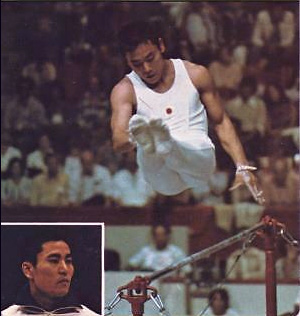

Eizo Kenmotsu (JPN)
1964 Olympic Team and R Gold Medalist

Medal Total
Olympic Games: 3 Gold, 1 Silver, 6 Bronze
World Championships: 7 Gold, 5 Silver, 3 Bronze
Hayata was born on October 10, 1940.
Competition Results
1968
Olympic Games: 1st Team, 4th AA, 3rd HB, 5th PH, 5th PB, 6th FX
1969
GDR-JPN Dual Meet: 1st Team, 1st AA
NHK Cup: 6th AA
Pre-World Championships: 1st AA
World Cup: 2nd AA
1970
World Championships: 1st Team, 1st AA, 1st HB, 2nd FX, 2nd PH, 2nd PB, 4th R, 5th V
1972
Chunichi Cup: 2nd AA
Olympic Games: 1st Team, 2nd AA, 3rd PH, 3rd PB, 3rd HB, 4th FX, 5th R, 5th V
Tokyo Cup: 2nd AA
1973
Japanese Championships: 4th AA
1974
Chunichi Cup: 3rd AA
Moscow News International: 1st HB
Riga International: 1st PH, 1st PB, 1st HB
World Championships: 1st Team, 3rd AA, 1st PB, 3rd PH, 3rd HB, 5th V
1975
NHK Cup: 3rd AA
1976
Japanese Championships: 1st AA
NHk Cup: 2nd AA
Olympic Games: 1st Team, 2nd PH, 2nd HB, 5th R, 6th FX
1977
77 NHK Cup: 3rd AA
1978
Japanese Championships: 2nd AA
NHK Cup: 2nd AA
World Championships: 1st Team, 2nd AA, 1st PB, 6th R, 8th V, 8th HB
World Cup: 4th AA, 5th PH, 5th PB, 7th R, 7th HB
1979
Japanese Championships: 7th AA
World Championships: 2nd Team
This page was created on April 10, 2020.
© Gymn Forum